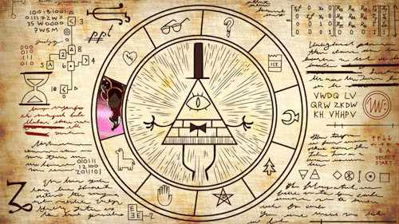

La Rueda Bill Cipher o El Zodiaco
El Zodiaco es un símbolo asociado a Bill Cipher; Es revelado mas tarde que cada pequeño símbolo alrededor de este, es una profecía para vencer a Bill, y es cada uno de los personajes de la serie. El Zodiaco aparece cada vez que se acaba la canción del inicio, durante unos segundos, junto con un susurro casi imperceptible que contiene el codigo para traducir otro criptograma

Este símbolo aparece varias veces durante la serie. Los episodios donde aparece son:
Cada pequeño símbolo alrededor de Bill representa un personaje de la serie, que en orden serian:

Todos estos símbolos se han visto por la serie.